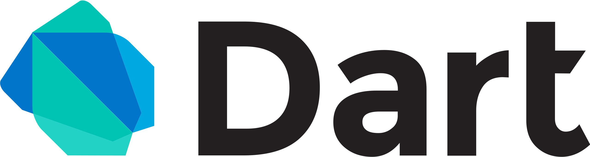

Lenguajes y Frameworks más Populares
Descubre las herramientas que están moldeando el futuro del desarrollo de software
La importancia de conocer diferentes lenguajes y frameworks
Comprender la relación entre un lenguaje de programación y un framework es esencial para desarrolladores de software. Los frameworks proporcionan estructuras y herramientas que simplifican el proceso de desarrollo, permitiendo a los programadores aprovechar al máximo el potencial de un lenguaje determinado.
El Lenguaje de Marcado de Hipertexto (HTML) es el código que se utiliza para estructurar y desplegar una página web y sus contenidos. Por ejemplo, sus contenidos podrían ser párrafos, una lista con viñetas, o imágenes y tablas de datos.
CSS es un lenguaje informático que especifica cómo se presentan los documentos a los usuarios: cómo se diseñan, compaginan, etc.
JavaScript es un lenguaje de programación que los desarrolladores utilizan para hacer páginas web interactivas. Desde actualizar fuentes de redes sociales a mostrar animaciones y mapas interactivos, las funciones de JavaScript pueden mejorar la experiencia del usuario de un sitio web.
Python es un lenguaje de programación ampliamente utilizado en las aplicaciones web, el desarrollo de software, la ciencia de datos y el machine learning (ML). Los desarrolladores utilizan Python porque es eficiente y fácil de aprender, además de que se puede ejecutar en muchas plataformas diferentes.
Dart es un lenguaje open source desarrollado en Google con el objetivo de permitir a los desarrolladores utilizar un lenguaje orientado a objetos y con análisis estático de tipo.
Laravel es uno de los frameworks de PHP más populares y potentes en el desarrollo web. Este framework permite a los desarrolladores crear aplicaciones web de manera eficiente y elegante, ofreciendo una amplia gama de herramientas y características que simplifican el proceso de desarrollo.